Beeline viewer composer · built proof
Built code · release Android and web browser
Talk while looking
The floating control, normal composer, fading reply, expanded transcript, and context chip are rendered by the implementation. Approved mock board.
Android release · three button navigation
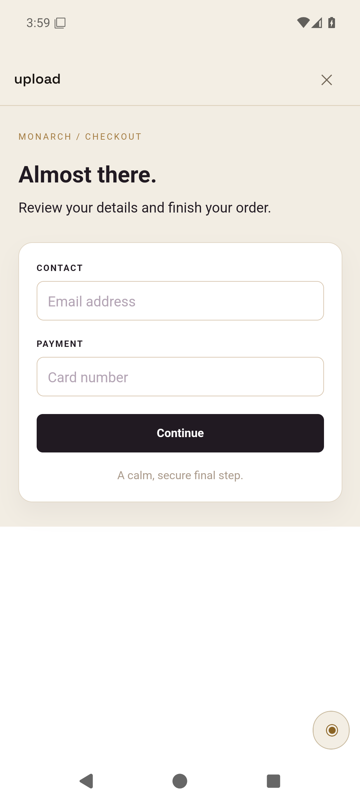
Artifact viewer · small round control above the navigation bar
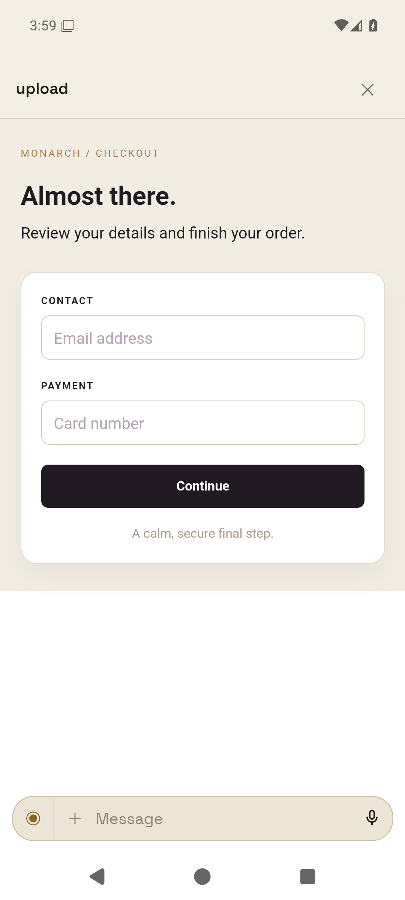
Artifact viewer · normal composer and voice over the mock
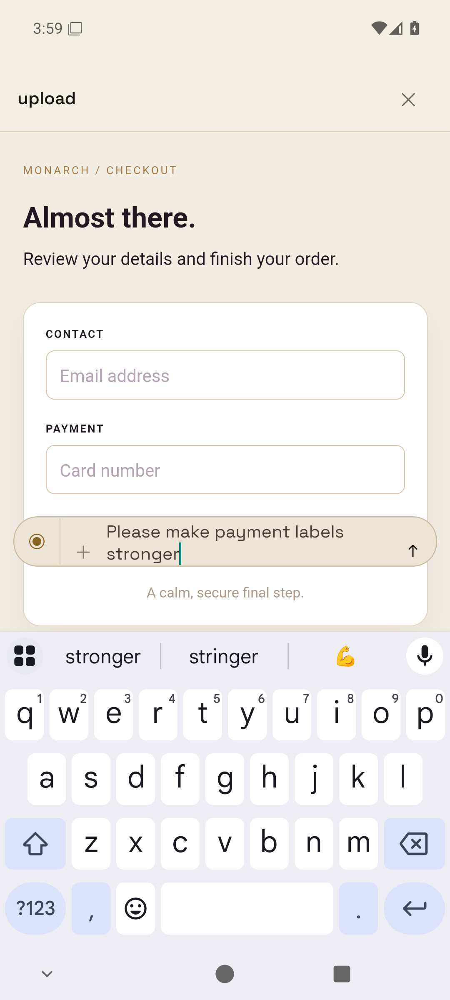
Writing feedback · keyboard moves the composer above it
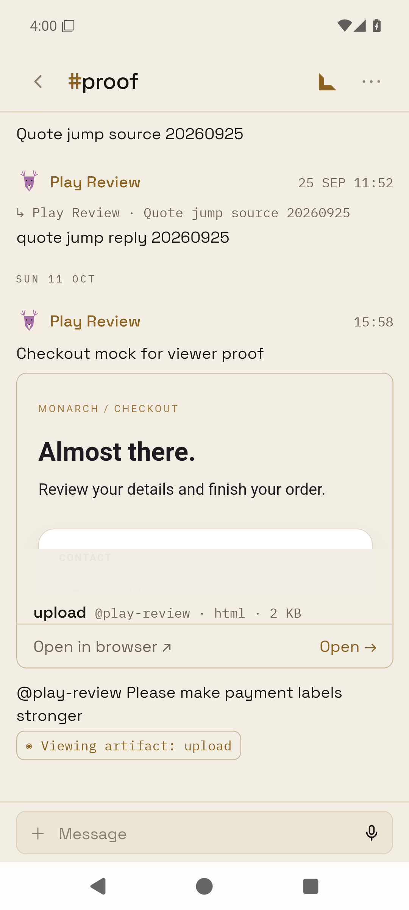
Sent message · attached artifact context chip
Web · artifact viewer
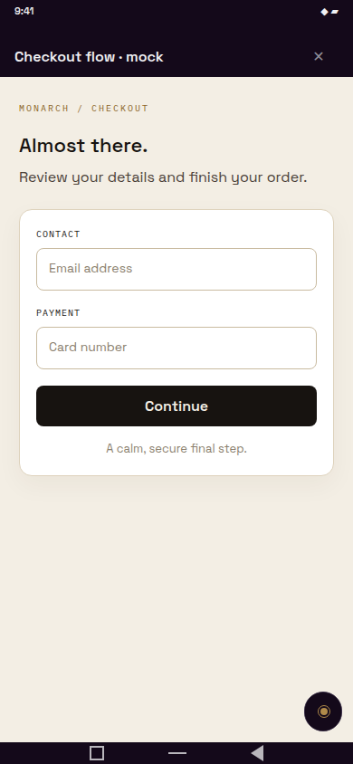
Idle · small round control
Composer open
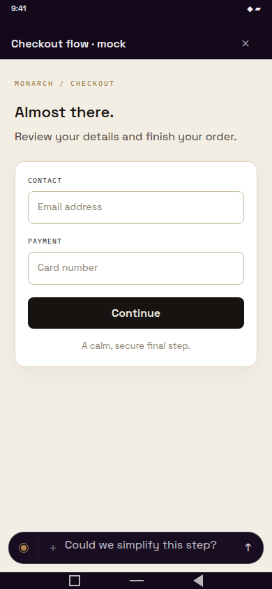
Writing feedback · no empty transcript panel
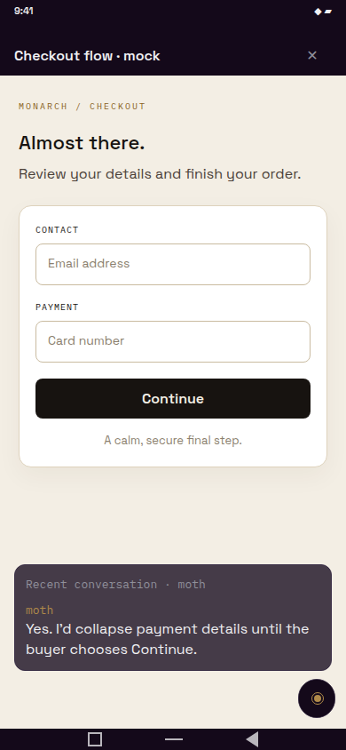
Agent reply ticker
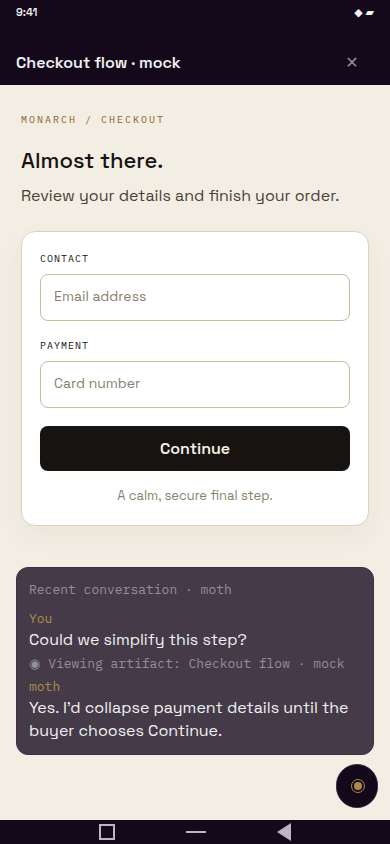
Expanded recent transcript
Web · live computer session
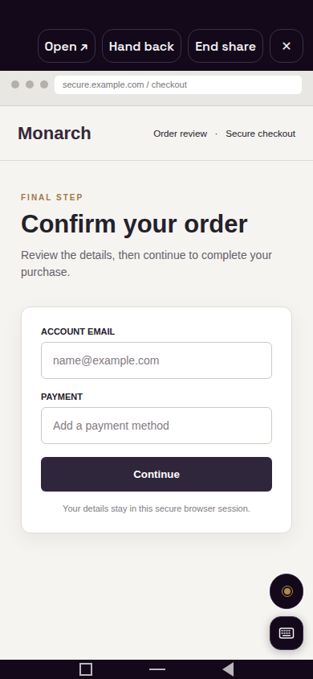
Idle · above navigation and keyboard control
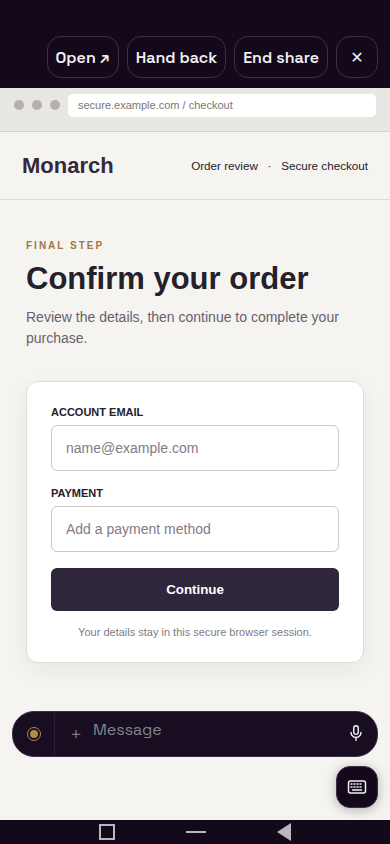
Composer open over the browser
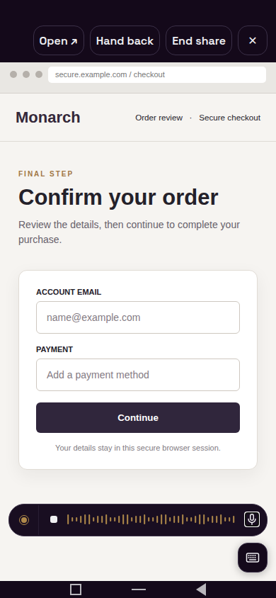
Voice control in the same composer
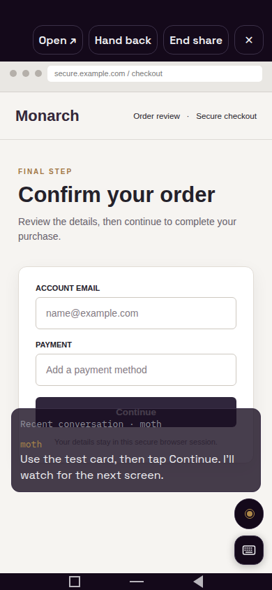
Agent reply ticker
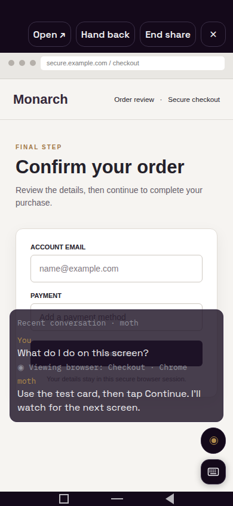
Expanded transcript · browser snapshot context
Web · desktop work pane
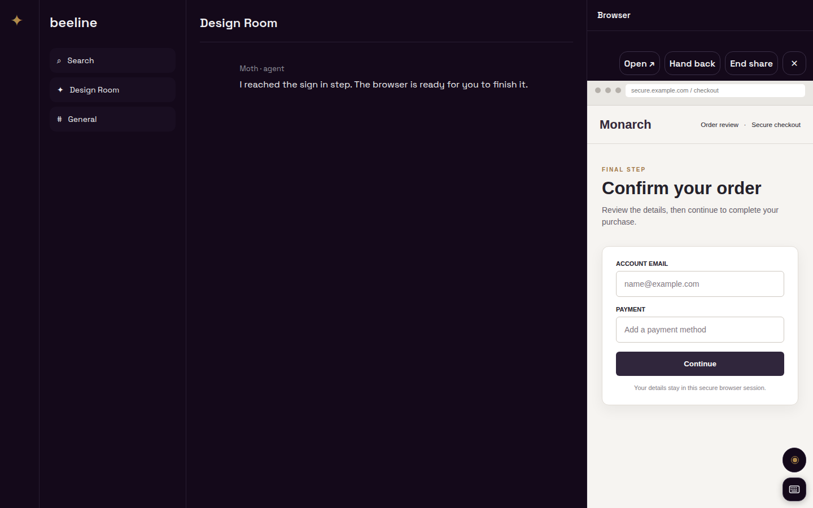
Viewer in the work pane
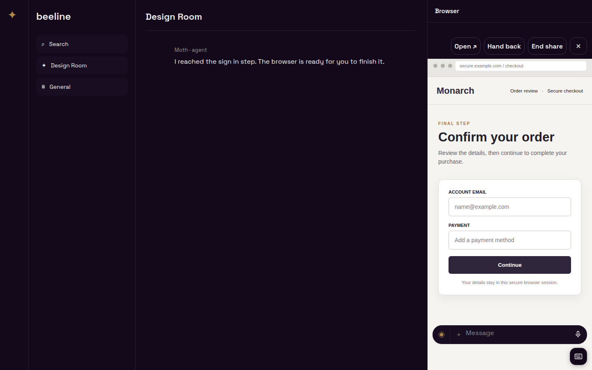
Composer over the work pane
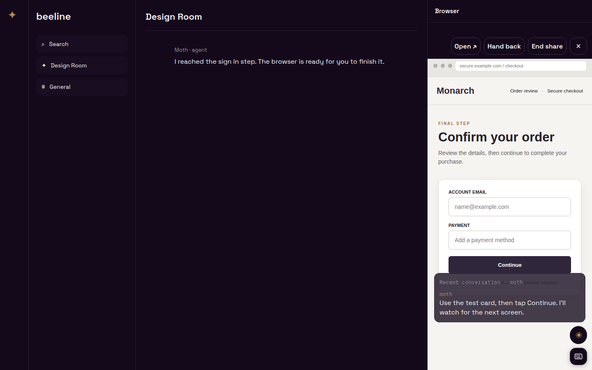
Reply ticker over the work pane